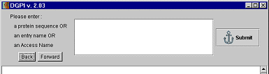

DGPI v2.04
User manual
DGPI v2.04 proposes two operating modes:
-
with graphic interface;
-
with text interface (on the command line).
Graphic mode
The graphic mode makes it possible to enter a protein sequence in three
various forms:
-
access number;
-
entry name;
-
sequence of amino acids.
The protein entered in the text box presented below. Then, click on the
Submit button to analyze the protein.

The result of the analysis by DGPI is presented in graphic form in the
lower part of the window.
It is possible to submit several proteins, and then navigate between
the results using the buttons " Back " and " Forward ".
Text mode
The text mode makes it possible to analyze proteins in batch mode, which
makes it possible to integrate DGPI in an automatic data processing sequence
of proteins. The text mode also has the advantage of allowing the use of
proteins in FASTA format.
Syntax for the text mode is the following:
dgpi [-file=<file_name> [-output=HTML|text]] [-h] [-q]
The significance of the options is the following:
-q : quiet mode (only error
messages are displayed)
-output: output file format text or HTML (default is HTML)
-h
: display help
-file : tell DGPI which file contains the protein.
The result is stored in
<file_name>.html or .txt
if text output is choosed
The file specified by the option -file can contain a protein
in various formats:
-
access number;
-
entry name;
-
sequence of amino acids;
-
protein with FASTA format.
The FASTA format used in DGPI does not have all the functionalities of
current format FASTA. The following functionalities are not supported by
DGPI:
-
several proteins in a file;
-
nonconventional amino acids (supported: the 20 basic ones, X, B, U and
Z);
-
the access number of protein must be in the first line of characters 4
to 10.
An example of each format accepted by DGPI for the text mode is provided.
These files are called
example_*_format.txt
(* replaces an unspecified
character string).
Manual DGPI v2.04 User manual
http://dgpi.pathbot.com/
email: dgpi@bigfoot.com |
18 august 2000
|
|